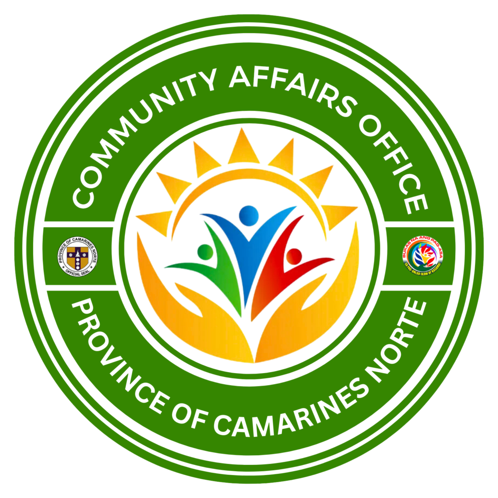

← Back to Portfolio
August 10, 2025
Civil Service Examination - Professional Level
Rating: 85.52%
Passed the Civil Service Examination - Professional Level on August 10, 2025 at Daet, Camarines Norte | Region 5 with a rating of 85.52%.
- Demonstrates competency in civil service examinations
- Qualifies for appointment to various government positions in the Philippines
- Shows proficiency in verbal ability, numerical ability, and reasoning
- Reflects strong analytical and problem-solving skills
2021-2023

Senior High School Highest Honor
Mabini Colleges
Graduated with Highest Honors from Senior High School (2021-2023), achieving the highest academic distinction in Grades 11 and 12.
- Achieved the highest academic distinction - Valedictorian
- Exceptional performance across all subjects in STEM track
- Outstanding dedication to learning and academic excellence
- Consistent excellence throughout Grades 11 and 12
- Demonstrates mastery of specialized knowledge
2023
2nd Best Capstone Paper
Mabini Colleges
Awarded 2nd Best Capstone Paper for outstanding research and project development during Senior High School.
- Recognition for quality research methodology
- Depth of analysis and innovation in solutions
- Effective presentation of findings
- Strong technical competencies demonstrated
- Critical thinking and problem-solving excellence
- Meaningful research in computing and technology
2023
Best in Pitching

Senior High School
Awarded Best in Pitching for delivering an exceptional and compelling presentation.
- Strong communication and presentation skills
- Clarity in conveying complex ideas
- Persuasive delivery and audience engagement
- Excellence in public speaking
- Professional presentation capabilities
- Confident response to questions and feedback
2017-2021

High School Honor Student
CNSC Abaño Laboratory High School
Recognized as an Honor Student during Junior High School education (2017-2021), demonstrating consistent academic excellence.
- Consistent academic excellence across all subjects
- Strong performance in core subjects
- Active participation in class activities
- Commitment to maintaining high academic standards
- Recognition throughout Grades 7-10
2011-2017
Elementary Honor Student
CNSC Abaño Laboratory Elementary School
Recognized as an Honor Student during elementary education at CNSC Abaño Laboratory Elementary School (2011-2017).
- Consistent academic excellence throughout elementary years
- Dedication to learning and exemplary performance
- Strong foundational skills in all subjects
- Demonstrated discipline and strong work ethic
- Early recognition of academic potential